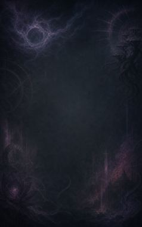
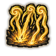

Technique trees › Clans and bloodlines
Dhënada clan
9 techniques in the Clan tab.
Needs the Dhënada gene.
Siêu Tân Tinh C
Chakra 14. The halo sends off a stream of small chakra bursts.
Siêu Tân Tinh C
Chakra 14. The halo sends off a stream of small chakra bursts.
The halo sends off a stream of small chakra bursts.
| Rank | Chakra | Cooldown | Class level |
|---|---|---|---|
| C | 14 | 7.5 s | 3 |
Nova Disca C
Chakra 18. Throw the halo like a cutting disc.
Nova Disca C
Chakra 18. Throw the halo like a cutting disc.
Throw the halo like a cutting disc.
| Rank | Chakra | Cooldown | Class level |
|---|---|---|---|
| C | 18 | 10 s | 5 |
Drosera / Rhizophoraceae CB
Chakra 18 to 28. Chakra tendrils latch onto an enemy: a draining grip at C rank, a full wrap at B.
Drosera / Rhizophoraceae CB
Chakra 18 to 28. Chakra tendrils latch onto an enemy: a draining grip at C rank, a full wrap at B.
Chakra tendrils latch onto an enemy: a draining grip at C rank, a full wrap at B.
| Rank | Chakra | Cooldown | Class level |
|---|---|---|---|
| C | 18 | 20 s | 5 |
| B | 28 | 25 s | 9 |
Jahannam Diyu C
Chakra 22. Fling a halo that explodes on impact.
Jahannam Diyu C
Chakra 22. Fling a halo that explodes on impact.
Fling a halo that explodes on impact.
| Rank | Chakra | Cooldown | Class level |
|---|---|---|---|
| C | 22 | 15 s | 6 |
Armillarium B
Chakra 30. Halos swirl around the user for a minute like an armillary sphere, burning anyone close.
Armillarium B
Chakra 30. Halos swirl around the user for a minute like an armillary sphere, burning anyone close.
Halos swirl around the user for a minute like an armillary sphere, burning anyone close.
| Rank | Chakra | Cooldown | Class level |
|---|---|---|---|
| B | 30 | 1.8 hours | 10 |
Halo Nebula A
Chakra 35. A halo shield around the user absorbs incoming attacks.
Halo Nebula A
Chakra 35. A halo shield around the user absorbs incoming attacks.
A halo shield around the user absorbs incoming attacks.
| Rank | Chakra | Cooldown | Class level |
|---|---|---|---|
| A | 35 | 1.2 hours | 12 |

Duatra A
Chakra 55. Tendrils rain from the sky over an area for five seconds.
Duatra A
Chakra 55. Tendrils rain from the sky over an area for five seconds.
Tendrils rain from the sky over an area for five seconds.
| Rank | Chakra | Cooldown | Class level |
|---|---|---|---|
| A | 55 | 2 hours | 14 |
Blót Niflheim S
Chakra 70. S-rank: a crushing sphere of tendrils surrounds the user for a minute.
Blót Niflheim S
Chakra 70. S-rank: a crushing sphere of tendrils surrounds the user for a minute.
S-rank: a crushing sphere of tendrils surrounds the user for a minute.
| Rank | Chakra | Cooldown | Class level |
|---|---|---|---|
| S | 70 | 4.8 hours | 17 |
Yggdrasil: Nine Planet Artillery S
Chakra 100. S-rank: every halo fires at once over a wide area.
Yggdrasil: Nine Planet Artillery S
Chakra 100. S-rank: every halo fires at once over a wide area.
S-rank: every halo fires at once over a wide area.
| Rank | Chakra | Cooldown | Class level |
|---|---|---|---|
| S | 100 | 6 hours | 19 |
Chakra is the technique's base cost, the number in its def. In play it is multiplied by the pawn's chakra energy usage multiplier, which traits (chakra artificer 90%, volatile conduit 110%), World of Naruto genes and jutsu enhancements change, so the technique window can show a slightly different number for each ninja. Cooldowns are in-game time, as the technique window shows them, and the pawn's cooldown stat shortens or lengthens them. World of Naruto gives every ninja a base of 100 maximum chakra; genes and traits change it.